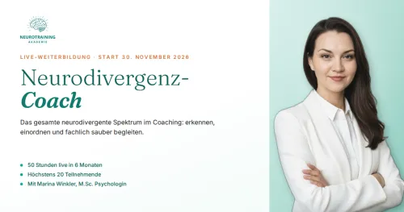
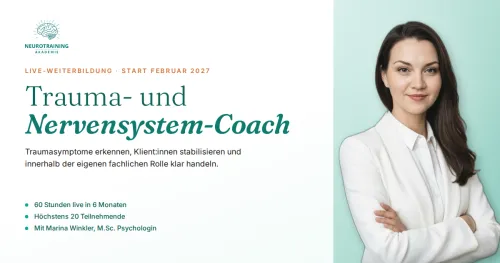

Neurodivergenz-Coach – Live-Weiterbildung für Coaches und Fachpersonen
Produktprofil · Marktplatz-Daten 2026-10-10 · Verkaufsseiten-Recherche 2026-10-09 · Kategorien: Education, Profession & Job, Personal Development
- Neurodivergenz-Coach – Live-Weiterbildung für Coaches und Fachpersonen ist ein/e Online-Coaching in Education und Profession & Job, vertrieben über den Digistore24-Marktplatz von Anbieter Neurotraining_Akademie, gelistet seit 2026-10-01.
- Listenpreis $2596.22; Digistore24 meldet — Checkout-Konversion, — Stornierungsquote und 10 % Affiliate-Provision.
- Verdienst pro Verkauf (Affiliate): $259.62 (Anbieter-seitige Statistik, keine Prognose).
Interesse an Neurodivergenz-Coach – Live-Weiterbildung für Coaches und Fachpersonen? Aktueller Preis, Boni und Garantiebedingungen finden Sie auf der offiziellen Seite des Anbieters:
Offizielle Verkaufsseite ansehen
Affiliate-Link (Werbung) — wir verdienen ggf. eine Provision, ohne Mehrkosten für Sie.

Marktplatz-Daten
| Produkttyp | Online-Coaching |
|---|---|
| Preis | $2596.22 (Single payment, Installment) |
| Affiliate-Provision | 10 % |
| Garantie/Rückgabe | Laut Verkaufsseite des Anbieters — vor dem Kauf auf der offiziellen Seite prüfen |
| Anbieter | Neurotraining_Akademie (gelistet seit 2026-10-01) |
| Marktplatz-Statistiken* | Checkout-Konversion — · Stornoquote — · Verdienst/Verkauf $259.62 |
* Anbieter-seitige Statistiken von Digistore24; sie hängen von der Traffic-Qualität ab und sind keine Prognose.
Marktplatz-Beschreibung des Anbieters
Live-Weiterbildung für Coaches, Berater:innen, Therapeut:innen und weitere Fachpersonen, die neurodivergente Menschen begleiten. 50 Unterrichtsstunden live online im virtuellen Klassenzimmer Montags 19:30–21:30 Uhr, dazu zwei Praxis-Samstage Start: 30.11.2026, maximal 20 Teilnehmende Leitung: Marina Winkler, M.Sc. Psychologin und Hochschuldozentin für Klinische Psychologie Abschluss ohne Abschluss…
Von der Verkaufsseite des Anbieters
Seitentitel: Neurodivergenz-Coach | Live-Weiterbildung 2026 — Neurotraining Akademie
Meta-Beschreibung: Live-Weiterbildung zum Neurodivergenz-Coach: ADHS, Autismus, AuDHD und das gesamte Spektrum — 50 Stunden, 100 % live, wissenschaftlich fundiert. Start 30. November 2026, Anmeldeschluss 20. November.
Hauptüberschrift
Mehr als Theorie — so lernst du bei der NTA
Abschnitts-Überschriften
- Nach dem Programm wirst du in der Lage sein:
- Für wen ist dieses Programm?
- Mit anderen im Austausch bleiben
Einstiegstext
Nach dem Programm Mit anderen im Austausch bleiben Diese Angebote für Absolvent:innen sind geplant und starten nach der ersten Kohorte.
Geschlossene Gruppe für Absolvent:innen: fachlicher Austausch und Weiterempfehlungen untereinander, passend zum Expert:innen-Finder.
Ausgewählte Studien und Fachfragen, eingeordnet und per E-Mail. Sie hält dich fachlich auf dem Laufenden und bietet Raum für Fachfragen.
Ein Termin pro Monat, live online, in kleiner Runde. Fälle werden ausschließlich anonymisiert eingebracht.
Fragen, die die Verkaufsseite beantwortet
- Du fragst dich: Wo endet Coaching, wo beginnt Therapie oder Diagnostik?
Recherche-Methode: rohes HTML · 3717 Wörter · Qualität: rich · recherchiert am 2026-10-09. Vollständige Recherche-Datei (MD) ↗
Wie Produkte dieser Art geliefert werden
Allgemeiner Hinweis zu diesem Produkttyp (keine anbieterspezifische Anleitung): Online-Coaching läuft über geplante Videocalls und/oder einen Mitgliederbereich; der Coach meldet sich nach dem Kauf zur Terminvereinbarung. Für die genaue Anwendung von Neurodivergenz-Coach – Live-Weiterbildung für Coaches und Fachpersonen sind die offizielle Verkaufsseite und die enthaltenen Materialien maßgeblich.
Gut zu wissen
- Hoher Preis: $2596.22 ist eine erhebliche Ausgabe — prüfen Sie, ob es einen Zahlungsplan gibt, und vergleichen Sie zuerst die günstigeren Alternativen der Kategorie.
- Keine Garantie-Formulierung in unserer Recherche gefunden — bestätigen Sie das Rückgabefenster auf der offiziellen Seite, bevor Sie kaufen.
- Marktplatz-Zahlen (Preis, Provision, Konversion, Stornoquote) — Quelle: offizielle Digistore24-Marktplatz-API (Affiliate-Sicht), Stand 2026-10-10. Gegenprüfung: Marktplatz-Suche nach Produkt-ID 716420.
- Verkaufsseiten-Zitate — Quelle: https://neurotraining-akademie.de/neurodivergenz-coach, abgerufen 2026-10-09 (Methode: rohes HTML). Verify: offizielle Seite öffnen.
- Garantie / Rückgabe — vom Anbieter festgelegt; vor dem Kauf auf der Verkaufsseite bestätigen.
- Nicht von uns geprüft: Produktqualität, Ergebnisse, Testimonials — kein Praxistest für dieses Listing durchgeführt.
Häufige Fragen zu Neurodivergenz-Coach – Live-Weiterbildung für Coaches und Fachpersonen
Antworten aus dem Marktplatz-Snapshot (2026-10-10) und der Verkaufsseiten-Recherche (2026-10-09); Anbieteraussagen sind inline gekennzeichnet.
Was ist Neurodivergenz-Coach – Live-Weiterbildung für Coaches und Fachpersonen?
Neurodivergenz-Coach – Live-Weiterbildung für Coaches und Fachpersonen ist ein Angebot des Typs „Online-Coaching" im Digistore24-Marktplatz, Anbieter: Neurotraining_Akademie, gelistet seit 2026-10-01. Eingepflegt unter Bildung und Beruf & Karriere. Digistore24 wickelt Checkout, Lieferung und Rückgaben ab.
Wie viel kostet Neurodivergenz-Coach – Live-Weiterbildung für Coaches und Fachpersonen?
Der Digistore24-Marktplatz listet es für $2596.22 (single payment, installment). Preise legt der Anbieter fest und können sich ändern — der Marktplatz-Eintrag oben zeigt den Schnappschuss; die offizielle Verkaufsseite zeigt den aktuellen Preis.
Gibt es eine Geld-zurück-Garantie für Neurodivergenz-Coach – Live-Weiterbildung für Coaches und Fachpersonen?
Unsere Verkaufsseiten-Recherche hat keine explizite Garantie-Formulierung gefunden. Viele Digistore24-Produkte bieten 60 Tage Geld-zurück, aber das legt jeder Anbieter selbst fest — bestätigen Sie es auf der offiziellen Verkaufsseite, bevor Sie kaufen.
Ist Neurodivergenz-Coach – Live-Weiterbildung für Coaches und Fachpersonen seriös?
Wir bewerten keine Seriosität — wir veröffentlichen überprüfbare Zahlen: Anbieter Neurotraining_Akademie (gelistet seit 2026-10-01), Checkout-Konversion —, Stornoquote —, Affiliate-Verdienst/Verkauf $259.62 (alles Anbieter-seitige Marktplatz-Statistiken). Lesen Sie unsere 6-Punkte-Bewertungsmethode und entscheiden Sie anhand der Zahlen — oder diskutieren Sie Neurodivergenz-Coach – Live-Weiterbildung für Coaches und Fachpersonen auf GitHub.
Gibt es Alternativen zu Neurodivergenz-Coach – Live-Weiterbildung für Coaches und Fachpersonen?
Ja — die nächstähnlichen Angebote derselben Kategorie sind Schul-Paket gegen Mobbing, MATRIXPRINZIP von Coach Cecil, Online-Ausbildung zum Pferdegestützten Coach. Details in der Vergleichstabelle oben bzw. auf der Alternativen-Seite mit allen Marktplatz-Zahlen.
Wo kann ich Neurodivergenz-Coach – Live-Weiterbildung für Coaches und Fachpersonen sicher kaufen?
Nur über die offizielle Verkaufsseite, die auf dieser Seite verlinkt ist (Checkout und Rückgaben laufen über Digistore24). Prüfen Sie dort Preis und Garantie vor der Bestellung. Der Link ist ein Affiliate-Link — der Kauf unterstützt diese Website ohne Mehrkosten für Sie.
Wie erhalte ich Neurodivergenz-Coach – Live-Weiterbildung für Coaches und Fachpersonen nach der Zahlung?
Der Checkout läuft über Digistore24: Nach der Zahlung erhalten Sie Ihren Zugang oder Download per E-Mail und in Ihrem Digistore24-Kundenkonto. Lieferdetails für diesen Produkttyp: Online-Coaching läuft über geplante Videocalls und/oder einen Mitgliederbereich; der Coach meldet sich nach dem Kauf zur Terminvereinbarung. Bei Problemen kann der Digistore24-Käufersupport Ihre Bestellung wiederherstellen.
Ähnliche Angebote in Bildung

ZUGRIFF FÜR ALLE! Jede Person, die ein Arbeitsverhältnis mit Ihnen als Schulgemeinde hat sowie eine E-Mail-Adresse von Ihrer Schule, hat die Zufriffsberechtigun

MATRIXPRINZIP – High-Ticket-Produkt mit bis zu 820,56€ Provision pro Verkauf! Mindset, emotionale Intelligenz und finanzielle Intelligenz – genau die Fähigkeite

Eine bislang noch einzigartige Ausbildung auf dem Markt für eine interessante Zielgruppe! Das Pferdegestützte Coaching auf Basis systemischer Grundlagen erlerne

Für die Teilnehmer ist die Gesamt- oder Teil-Ausbildungen möglich. Empfehle das einzigartige Produkt & verdiene passives Einkommen durch unser effektives Ay
Weitere Angebote von Neurotraining_Akademie

Live-Weiterbildung für Coaches, Berater:innen, Therapeut:innen und weitere Fachpersonen, die Menschen traumasensibel begleiten und dabei das Nervensystem einbez
Optionen vergleichen? Neurodivergenz-Coach – Live-Weiterbildung für Coaches und Fachpersonen im Vergleich mit den nächsten Alternativen — Marktplatz-Zahlen direkt nebeneinander.
Wie schneidet Neurodivergenz-Coach – Live-Weiterbildung für Coaches und Fachpersonen ab? (Marktplatz-Zahlen)
| Produkt | Typ | Preis | Provision | Checkout-CR* | Storno* | Verdienst/Verkauf |
|---|---|---|---|---|---|---|
| Neurodivergenz-Coach – Live-Weiterbildung für Coaches und Fachpersonen | Online-Coaching | $2596.22 | 10 % | — | — | $259.62 |
| Schul-Paket gegen Mobbing | Mitgliederbereich & Videokurs | $4228.15 | 33 % | — | — | $1395.29 |
| MATRIXPRINZIP von Coach Cecil | Mitgliederbereich & Videokurs | $1056.31 | 50 % | 1 % | 2.71 % | $922.05 |
| Online-Ausbildung zum Pferdegestützten Coach | Mitgliederbereich & Videokurs | $3842.06 | 20 % | — | — | $768.41 |
| Ayurveda-Komplett-Ausbildung | Mitgliederbereich & Videokurs | $2373.04 | 30 % | — | — | $711.92 |
Entscheidungsfaktoren für Käufer
- Funktion: Checkout-Konversion und Anbieter-Bilanz vergleichen — beide in der Tabelle oben.
- Passung: Typ und Voraussetzungen (Lieferformat, Vorkenntnisse) in jedem Profil prüfen.
- Wartung: Die Stornoquote ist das Kaufreue-Signal; Nutzungsbedingungen stehen auf den offiziellen Seiten.
- After-Sales: Garantie-Formulierung und Support — vor dem Kauf auf offiziellen Seiten verifizieren.
* Anbieter-seitige Statistiken; abhängig von der Traffic-Qualität, keine Prognose. Vollständiger Kontext: Alternativen-Seite zu Neurodivergenz-Coach – Live-Weiterbildung für Coaches und Fachpersonen.
Neurodivergenz-Coach – Live-Weiterbildung für Coaches und Fachpersonen ist auch gelistet in
Beruf & Karriere (501 Produkte) · Persönlichkeitsentwicklung (83 Produkte)
Ähnliche Preislage in Bildung

Ausbildung zum Imaginationspractitioner – 500 € Provision pro Verkauf für dich! Bewirb eine hochwertige Ausbildung für Coaches, Therapeutinnen, Heilpraktikerinn
Live-Weiterbildung für Coaches, Berater:innen, Therapeut:innen und weitere Fachpersonen, die Menschen traumasensibel begleiten und dabei das Nervensystem einbez

CleanLearn – Affiliate Partnerbereich Interner Bereich für alle offiziellen CleanLearn-Partner & Affiliates. Dieser Bereich dient als zentrale Übersicht für
Einjährige Online Ausbildung in Energetischer Psychologie zum zertifizierten MET-Therapeut/in®, MET-Coach®, MET-Berater/in®, MET-Praktitioner Online Unterricht
Ähnliche Suchanfragen
Wo Sie es sich ansehen können
Wo Sie es sich ansehen können
Aktuelle Preise, Garantie und Boni finden Sie auf der offiziellen Verkaufsseite:
Offizielle Verkaufsseite ansehen
Das ist ein Affiliate-Link (Werbung) — kaufen Sie darüber, verdienen wir ggf. eine Provision, ohne Mehrkosten für Sie.
Quellen & weiterführende Informationen
- Offizielle Verkaufsseite (aktueller Preis, Garantie, Boni): neurotraining-akademie.de/neurodivergenz-coach (Affiliate-Link)
- Öffentliche Digistore24-Produktseite: digistore24.com/product/716420
- Vollständige Recherche-Datei (Markdown, versioniert): content/products/60088-neurodivergenz-coach-live-weiterbildung-f-r-coaches-und-fachpersonen.md
- Affiliate-Supportseite des Anbieters: neurotraining-akademie.de/partnerprogramm
- Marktplatz-Kategorie: Bildung
Wie wir Produkte wie Neurodivergenz-Coach – Live-Weiterbildung für Coaches und Fachpersonen bewerten
Sechs Prüfungen, ausschließlich mit offiziellen Marktplatz-Zahlen. Die vollständige Bewertungsmethode lesen · unsere Recherche-Standards & Kennzeichnung.
Fragen oder eigene Erfahrungen mit Neurodivergenz-Coach – Live-Weiterbildung für Coaches und Fachpersonen?
Praxis-Tests veröffentlichen wir erst, nachdem wir ein Produkt selbst gekauft haben — aber Ihre Erfahrung hilft anderen Lesern: Diskussion zu Neurodivergenz-Coach – Live-Weiterbildung für Coaches und Fachpersonen auf GitHub starten/verfolgen. Falsche Zahl gefunden? Korrektur melden — jede Seite zeigt ihre Datenstände, Korrekturen gelten für die ganze Website.